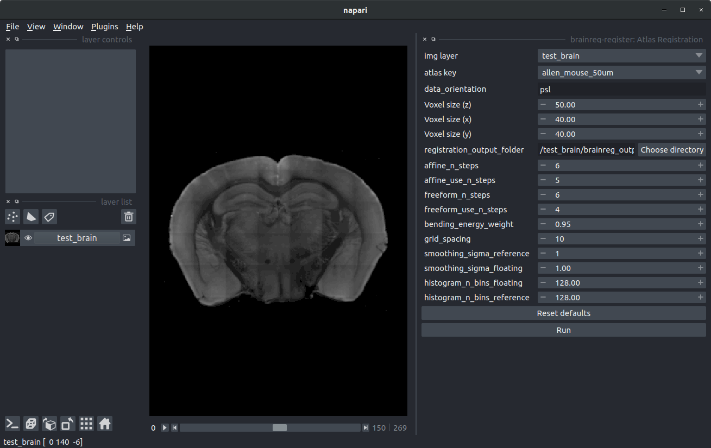

Registering a whole-brain dataset to the Allen Mouse Brain atlas with brainreg#
Hint
For full information on how to use brainreg, please see the brainreg page
Setting up#
To test out brainreg, we supply a small mouse brain dataset to get you started. To begin:
Download the data from here (the dataset is ~10MB, so it should download quickly).
Unzip the data to a directory of your choice (doesn’t matter where). You should end up with a directory called
test_brainwith 270.tifimages
To run brainreg, you need to know:
Where your data is (in this case, it’s the path to the
test_braindirectory)Where you want to save the output data (we’ll just save it into a directory called
brainreg_outputin the same directory as thetest_brain)The pixel sizes of your data in microns (see Image definition for details). In this case, our data is 40μm per pixel in the coronal plane, and the spacing of the planes is 50μm.
The orientation of your data. The software needs to know how you acquired your data (coronal, sagittal etc.). For this BrainGlobe uses bg-space. For this tutorial, the orientation is
psl, which means that the data origin is the most posterior, superior, left voxel. For more details see Image definitionWhich atlas you want to use (the list of available atlases is available here). In this case, we want to use a mouse atlas (as that’s what our data is), and we’ll use the 50μm version of the Allen Mouse Brain Atlas
Hint
In this tutorial we will use the 50μm version of the Allen Mouse Brain Atlas. Low-resolution atlases like this are usually only used for testing (the registration will work much quicker at lower resolution). In this case, the test input data is very low resolution, so using a higher resolution atlas doesn’t make much sense.
When using your own data, you’ll probably find that higher resolution atlases provide better results. Make sure to test out the different resolutions to see what works best.
Running the registration#
There are two ways to run the registration using brainreg. If you’re just getting started, we recommend the napari plugin. This provides a graphical user interface, and makes it easier to tweak parameters.
If you need to run brainreg on many samples, or on a remote machine (e.g., using an institutional high-performance computing system), there is a command-line interface.
Whichever interface you use, the results will be identical.
Registration using the napari plugin
Before you start
Install the brainreg-napari plugin from within napari (
Plugins->Install/Uninstall Package(s), choosingbrainreg-napari).)Open napari
Run brainreg
To run brainreg, we firstly need to load the data, by dragging and dropping the test_brain directory into the main
napari window. Then load the plugin by selecting brainreg-register: Atlas registration from the napari Plugins menu.
In the plugin, set all the necessary parameters:
Image layer- Set this to thetest_brainimage layerAtlas- Set this toallen_mouse_50umData orientation- Set this topslVoxel size (z)- Set to 50Voxel size (x)- Set to 40Voxel size (y)- Set to 40Output directory- ClickChoose directory, and create a new directory in the same directory astest_braincalledbrainreg_output
Make sure the image layer is deselected on the left-hand side, and then you should see something like this (N.B. the visualised plane and the contrast of the brain has been adjusted):

You can then click Run, and the registration will start. Lots of stuff will get printed to the
console as brainreg runs, and when it’s done (it should only take a minute or so), you will see something like:
INFO - MainProcess cli.py:230 - Finished. Total time taken: 0:00:29.15
This means that the registration is complete, but the results will appear in the napari window.
Toggling the visibility of the Boundaries layer (click the eye icon) is the easiest way to assess registration accuracy.
Registration using the command line tool
Instructions:
Setting up
Open a terminal (Linux/macOS) or your command prompt (Windows)
Activate your conda environment
Run brainreg
To run brainreg, you need to pass:
The path to the sample data
The path to the directory to save the results
The voxel sizes
The orientation
The atlas to use
We put this all together in a single command:
brainreg test_brain brainreg_output -v 50 40 40 --orientation psl --atlas allen_mouse_50um
Lots of output will get printed to the console as brainreg runs, and when it’s done (it should only take a minute or so), you will see something like:
INFO - MainProcess cli.py:230 - Finished. Total time taken: 0:00:29.15
This means that the registration is complete.
Visualising the results
brainreg comes with a plugin for napari (see Visualisation) for easy visualisation of the results.
To view your data, run napari from the same terminal/command as you ran brainreg (or open a new one and activate
your conda environment). You can then drag and drop the brainreg_output directory into napari, and see the results.
Note
The results are likely not perfect because (for speed and simplicity) we:
Used very low-resolution data
Use a low-resolution atlas
Left all the parameters as default (which were optimised for higher resolution atlases)